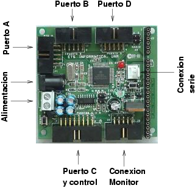
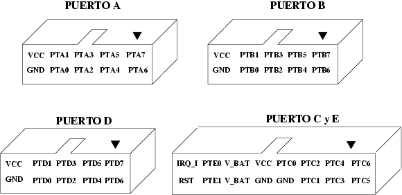
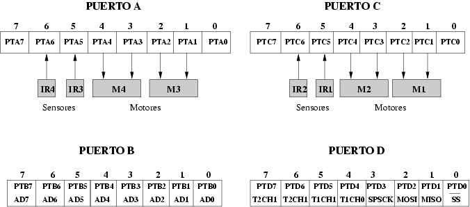
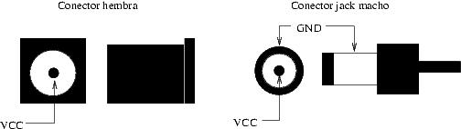

Introducción
Esta página se esta migrando al Wiki desde su versión en
HTML.
La tarjeta GPBOT, diseñada por el profesor Guillermo González de Rivera, se emplea en el laboratorio de la asignatura de Robótica de la Escuela Técnica Superior de la Universidad Autónoma de Madrid (EPS-UAM).
En esta página se recopila información sobre la tarjeta, se muestran ejemplos de programación en ensamlador y C y se presentan las diferentes herramientas software, para trabajar desde entornos Linux y Windows.
Caracteristicas
Microcontrolador MC68HC908GP32 de Motorola (8 bits), que incorpora entre otras cosas:
- 4 puertos de E/S, de 8 bits (Puertos A,B,C y D)
- 32KB de memoria Flash
- 512B de RAM
- Unidad de comunicaciones serie asíncronas (SCI)
- Unidad de comunicaciones serie síncrona (SPI)
- Dos temporizadores de 16 bits
- 8 canales A/D de 8 bits
- Bus de expansión dividido en 4 conectores para cable plano de bus (puertos A, B, C y D)
- Conector para cable monitor
- Alimentación: Entre 6.0v y 9.0 voltios, a través de clemas o conector tipo jack (alimentación regulada)
- Velocidad de funcionamiento: Cristal de 9.8304 Mhz, con el que se consigue una velocidad de bus de 2.45MHz
- Conexión directa con la tarjeta GP_IFAZ, para controlar hasta 4 motores de corriente continua y conectar 4 sensores de infrarrojos

Puertos de Conexión
Puertos de Conexión Tarjeta GpBot

Puertos de Conexión Tarjeta GpIfaz

Alimentación

La GPBOT se alimenta a través de un conector de tipo Jack macho de 5mm y conectando los cables a la clema de alimentación. La alimentación está regulada entre 6v y 9v, pero se recomienda usar las siguientes:
- Versión 1.0: Para su correcto funcionamiento se recomienda un a tensión de 7.5v
- Versión 1.1: Para su correcto funcionamiento se recomienda un a tensión de 7.5v
- Versión 1.2: Para su correcto funcionamiento se recomienda un a tensión de 6.0v
Software
Existen diferentes entornos para trabajar con la GPBOT:
- Entorno CodeWarrior, de la empresa MetroWerks. Entorno integrado para desarrollo de aplicaciones en C. Sólo plataformas Windows. Permiten descargar una versión de evaluación, limitada. De todas las disponibles la que necesitamos es la habilitada para microcontroladores.
- Entorno de desarrollo M68ICS08 de la empresa P&E Microcomputer Systems. Disponible sólo para plataformas Windows. Descarga gratuita. Incluye un editor, ensamblador, programador y depurador, todo integrado.
- Compilador cruzado SDCC. Herramienta libre y multiplataforma (disponible para Windows, Linux, MAC, etc), distribuida bajo licencia GPL. Es un compilador de C para microcontroladores de 8 bits, entre ellos el 68hc08, pero también es válido para los PIC, 8051, Z80, y algunos otros. Se utiliza en la consola, pero se integra perfectamente con otros IDEs, como por ejemplo Anjuta o el programer's notepad. También incluye el ensamblador as-hc08. Está disponible en Debian.
- Sofware de grabación GPBOT-DOWN. Permite programar la GPBOT desde plataformas Linux. Disponible bajo licencia GPL.
NOTA: Las directivas del ensamblador empleado por el M68ICS08 y por el as-hc08 son diferentes, por ello los programas .asm no se pueden llevar directamente de una a otra herramienta (los cambios, no obstante, son mínimos).
NOTA: Algunos de los nombres utilizados por el SDCC y el CodeWarrior son distintos. Por ejemplo el PORTx se traduce como PTx. Tened esto en cuenta a la hora de usar los diferentes ejemplos de programación.
Diferencias entre CodeWarrior y SDCC
- Los puertos en el SDCC se llaman PORTA, PORTB, PORTC, PORTD y PORTE. En el CodeWarrior PTA, PTB, PTC, PTD y PTE.
- En el SDCC las rutinas de interrupción se escriben "void rsi_t1ch0 (void) interrupt 4 {", en el CodeWarrior se altera el orden "interrupt 4 void rsi_t1ch0 (void)"
- En el SDCC para inscrustar ensamblador se usa la directiva "_asm CLI _endasm". En el CodeWarrior se usa "_asm { CLI } "
Documentación
Enlaces a las páginas de prácticas
Programas de Ejemplo
Proyectos para Code Warrior
En la página en HTML encontramos muchos más ejemplos en C para SDCC y también en ASM
Enlaces
Créditos
- Guillermo González de Rivera. Diseñador del sistema de desarrollo GPBOT.
- Iván González. Coautor del manual de programación de la GPBOT. Parte de los ejemplos de esta página están basados en sus programas.
- Carlos Jesús Venegas. Coautor del manual de programación de la GPBOT. Parte de los ejemplos de esta página están basados en sus programas.
- Juan González Gómez por los ejemplos de programación y la recopilación de información en la página original.